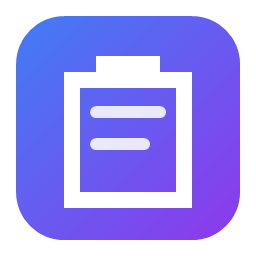

Featlis's Portfolio
ソフトウェア開発 / VRChatクリエイター（？）
About Me

情報工学やデータサイエンスの勉強をしています。
プログラミングはまだ勉強中で未熟ですが、少しずつソフトウェア開発にも挑戦しています。
また、VRChatのワールド作成やUnityを使ったアバター改変など、VRの世界で遊ぶことも好きです。

もし私の活動を応援していただける場合は、GitHub Sponsorsからのご支援をお待ちしております！
Projects

ClipFlyout
Windows 11 Fluent Design（本物のアクリル効果）に最適化された、クリップボード連携・即時アクションユーティリティ。作業中のウィンドウからフォーカスを奪わず、1クリックでカラー変換・JSON整形・タイムスタンプ変換などを実行可能です。
- 本物のアクリル効果 & タスクバーウィジェット: Windows 11 DWM トランジェントアクリルを採用。タスクバー近傍にシームレスに最新コピー内容を表示し、ワンクリックで展開。
- 13種類以上のデータ型自動判定: HEXカラー、Unixタイムスタンプ、JSON、Web URL、クリーンURL、Base64、CSV/TSV等の即時変換と「自動ペースト連携」。
- 完全ローカル処理 & プライバシー保護: パスワード管理ツール（1Password, Bitwarden, KeePass等）からのコピーは自動検知して除外。
Project Tsubomi（つぼみ）
PCの操作と画面を観察し、その経験と記憶から少しずつ育っていく「ボトムアップ型AI」を目指す個人開発プロジェクト。あらかじめ賢く作るのではなく、見て、覚えて、確かめながら育てることを設計の軸にしています。
- 全体観察の3層構造: DXGI Desktop Duplication の画面フレーム、低レベルフックの操作イベント、UI Automation の要素情報を時刻で結びつけて記録。
- 安全マスク: パスワード欄は記録せず、除外アプリはフレームでも黒塗り。マスクは保存前に必ず適用されます。
- 知識化と自己モデル: 記録からエピソード・意味知識・スキル候補を抽出（Phase 1以降）。分からないことは推測せず本人に聞く設計です。
紹介ページ
※ 本体リポジトリは非公開で開発中です
PrintTweet for Discord
Twitter(X)のURLから、ツイートのスクリーンショット画像をDiscordに送信する小さなBotを作ってみました。
- 高品質な画像生成:
tweetcaptureを用いて、RT・いいね数なども含めたツイートのスクリーンショットを生成します。 - 柔軟なテーマ対応: スラッシュコマンド（
/print）の引数でライトモード / ダークモード / ブラックモードのテーマ選択が可能です。
Twitter Translate BOT for Discord
Discordでのコミュニケーションを少し便利にしたくて、X(Twitter)のリンクを検知して翻訳するBotを作成しました。
- 非同期処理:
ユーザーのメッセージからリンクを抽出し、非同期HTTPクライアント（
aiohttp）を用いてAPIから翻訳結果を取得します。 - UIの実装:
discord.ui.Viewを活用したボタンUIを実装し、チャット上で直感的に翻訳先の言語を切り替えられるようにしました。 - ローカライゼーション: ユーザーのDiscordクライアント言語設定を判定し、メッセージを翻訳する仕組みを取り入れました。
- 設定の永続化: スラッシュコマンドで変更したサーバー設定を
bot_config.jsonに保存するようにしました。
Skills & Interests
💻 プログラミング / 開発
- C# / .NET (WPF デスクトップアプリ開発)
- Python (データ分析、Discord Bot開発)
- Unity (VRChatワールド構築、アバター改変)
📚 学習領域
- 情報理論、離散数学、複素解析
🎨 趣味・活動
- デジタルイラスト制作 (CLIP STUDIO PAINT, Affinity Photo)
- ゲーム、読書
Contact
ご連絡はこちらまでお気軽にどうぞ！
Discord
featlis